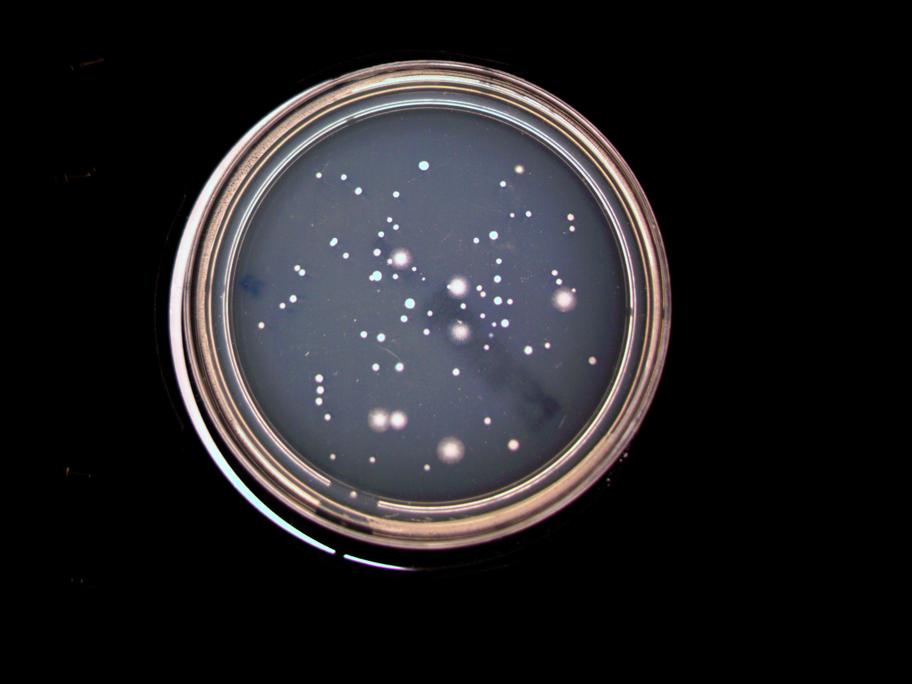

<!-- Header -->
<div>
    <mat-toolbar>
        <span>Colony Counter</span>
        <span class="header-spacer"></span>
        <button mat-icon-tune class="icon-button">
            <mat-icon>tune</mat-icon>
        </button>
    </mat-toolbar>
</div>

<div class="container-fluid" style="margin-left: 0;">

    <div class="row justify-content-md-center">

        <div class="col-3 sidebar container">

            <div class="row mx-auto row counter-window">
                <div class="col-8 counter-stats">
                    <p>Gedetecteerd: {{calculatedCount}}</p>
                    <p>Eigen telling: {{manualCount}}</p>
                </div>
                <div class="col-4 current-count">
                    <p>Totaal:</p>
                    <p class="current-count-number">{{totalCount}}</p>
                </div>
            </div>

            <div class="row mx-auto align-items-end action-buttons">
                <div class="col-12 d-flex justify-content-end">
                    <button type="button" class="btn btn-success save-button">Opslaan</button>
                    <button type="button" class="btn btn-warning refresh-button">
                        <mat-icon class="refresh-icon">refresh</mat-icon>
                    </button>
                </div>
            </div>

        </div>


        <div class="col-9 counter-container">
            
        </div>
    </div>

</div>